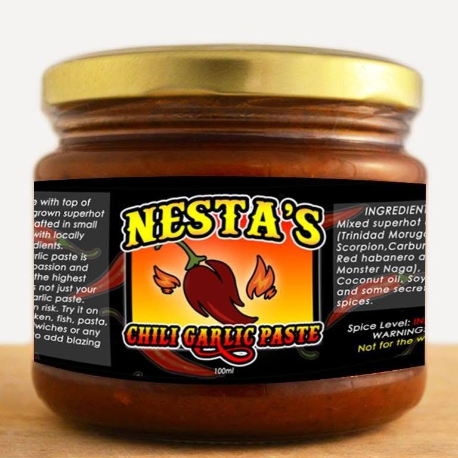

// Design · Branding · Marketing · Content · Digital · Systems
[DC MIRANDA]
I work across design, content, marketing, and code — turning ideas into things that actually run.
One practice.
Several disciplines.
Before design or automation, there was troubleshooting — helping people and teams get unstuck, one ticket at a time. That instinct became Aequora Digital.
Record log
2014–19 Customer support & tech assistance — the foundation.
2020–21 Social media & web developer, Outsourced Doers.
2021–now Independent — running Aequora Digital.
Status Active, working across five disciplines at once.
Capability map
Systems, not one-off pages.
A brand should sound like the person who built it.
Reach is a design problem too.
Made to be watched, not skipped.
One discipline, not the whole job.
Builds it, doesn't just brief it.
Directory listing

nestas-chili-co/
Scope Design, branding & digital
Role Brand identity, design system, full site build
Recognition 2019 Fiery Cup, 1st place
open ./nestas-chili-co/Experiment logs
Not client work — just things worth testing before they become client work.
How far synthetic voice and talking-head avatars can go before a real edit is still needed.
Turning the Aequora design system into something reusable across new builds, not just one.
Testing where GoHighLevel and AI planning can replace manual funnel setup — and where it still needs a human call.
Vow
Craft Design without follow-through is decoration.
Craft Automation without direction is noise.
Intent Make the disciplines agree with each other.
Have something
worth building?
Video, brand, funnel, or the system behind all three — tell me what you're actually trying to solve.